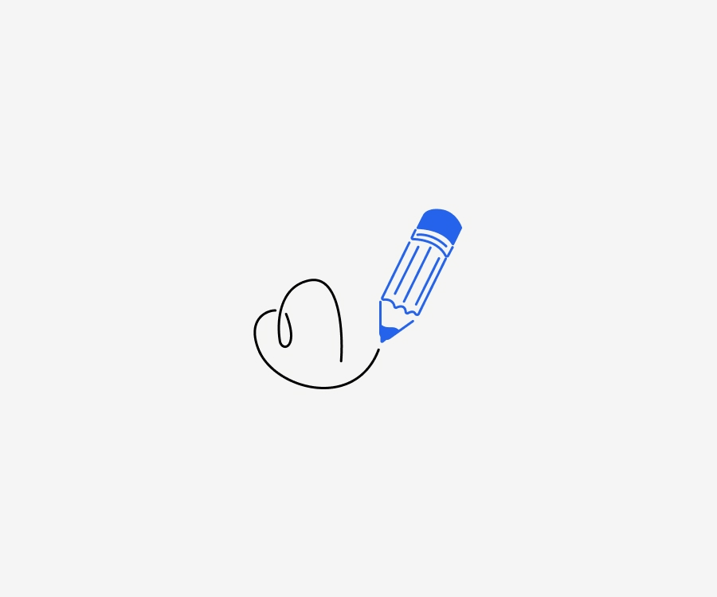
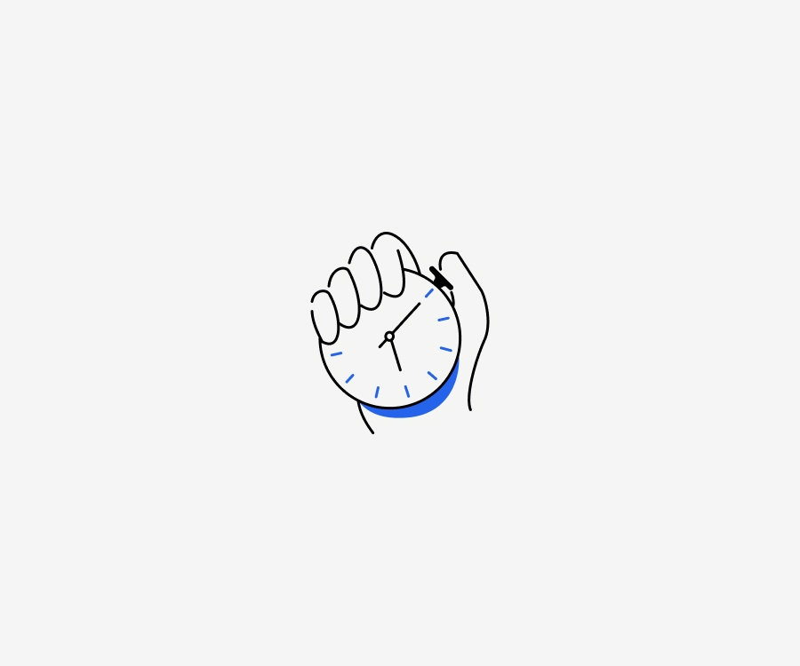
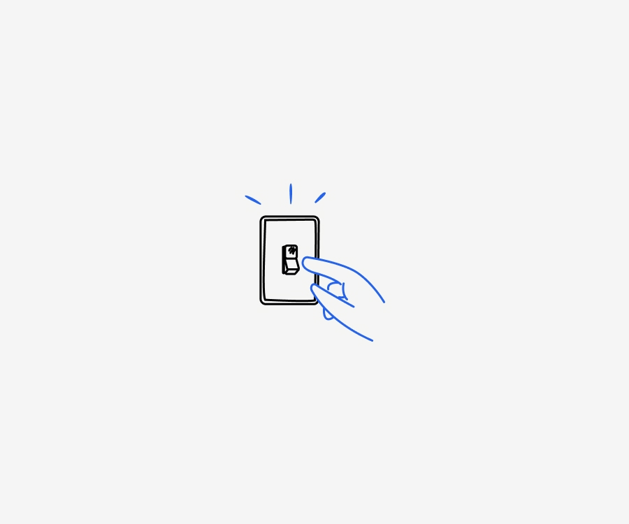
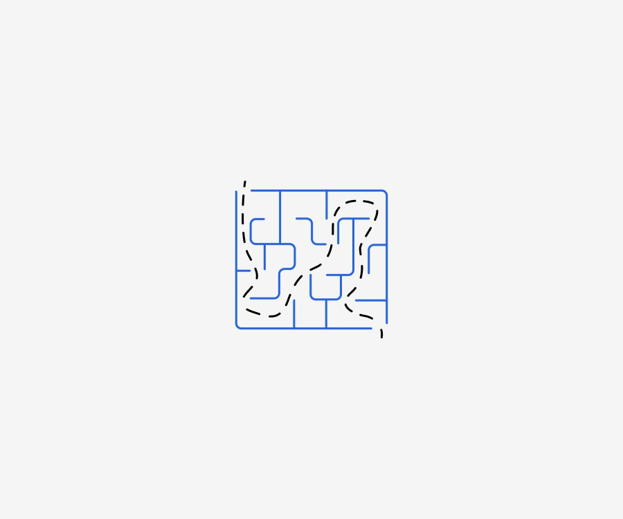

Researcher working on railway routing and scheduling. Interested in answer set programming and computational intelligence. Currently at Universität Potsdam. Based in Germany.
Professional working proficiency in German
.
Unlimited work authorization in Germany.



